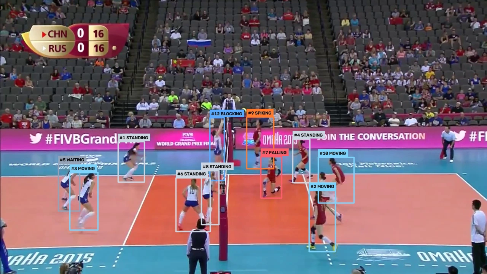
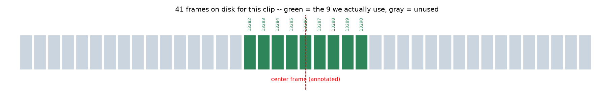
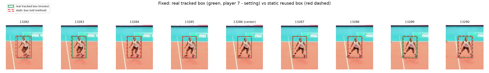
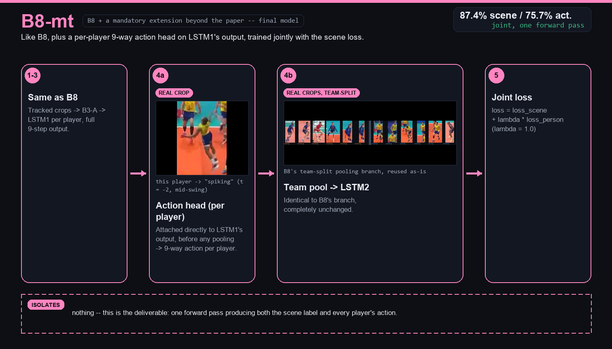

Understanding volleyball, frame by frame.
Upload a match and get back what each team is doing — pass, set, spike, point — and what every player on court is doing, with an annotated video and a navigable event timeline.

The caption is the dataset's annotation for the middle frame, which the model predicts correctly. Before and after it, the banner shows the model's own predictions on neighbouring frames, which the dataset does not annotate.
What this project does.
It reproduces and extends a CVPR 2016 paper on group activity recognition, then turns the trained model into a working system that watches real match video: it finds every player, follows them, and reports what each player and each team is doing.
Recognises group activity
Which team is passing, setting, attacking or has just won the point — eight classes, — test accuracy.
Recognises each player
Nine individual actions such as spiking, blocking and digging for every tracked player, — test accuracy.
Works on raw video
A fine-tuned detector (— mAP50) and tracker (— match) remove the need for hand-labelled boxes.
Explains its decisions
An eight-model ablation ladder shows what each design choice is worth; the best baseline reaches —.
Delivers a product
Upload or import a match and receive an annotated video, event timeline and analytics through this studio.
What the model sees and decides.
Every sample is a frame from the test split — matches the model never trained on. The full pipeline (detector, tracker, player-action model, group-activity model) ran on a 9-frame window around the frame, and each prediction was checked against the dataset's annotations. A sample is shown only when the predicted group activity equals the ground-truth label.
Group activity samples
One frame per group activity. The group label describes the whole team; boxes show every tracked player with their predicted action.
Player activity samples
One frame per individual action. The highlighted player was matched to a ground-truth box and the predicted action equals the annotation.
Samples are selected for being correct, so they illustrate the output rather than measure accuracy. Overall accuracy is reported under Technical → Evaluation.
The pipeline in motion.
The same verified test clips as above, played as the full annotated output: tracked players, their predicted actions and the group-activity banner. They loop on their own, slowed to about 12 seconds so each movement can be followed. All clips come from the dataset's held-out test split.
Group activity samples
Player activity samples
The player being checked is ringed in yellow; its predicted action equals the dataset's annotation at the middle frame.
Run the full pipeline on your own footage.
Upload a match clip or paste a link. The engine detects and tracks the players, recognises group and individual activity, and renders an annotated video with a navigable event timeline.
Live pipeline
Idle — waiting for a videoAnalysis results
Event timeline
Click a segment, a row, or the track to seek. The playhead follows the video.Activity distribution
Detected events by classPrediction confidence
One bar per event, in time orderEvents
Sorted by time · confidence is the model's softmax probability for the merged windowFootage already on the server.
Continuous rallies from the Volleyball dataset, the footage this model was trained for. Preview any clip or send it straight to the studio.
Import from YouTube
Temporarily unavailableThe model was trained on footage from one fixed, elevated camera showing live play only. Full matches add crowd shots, celebrations, referee close-ups, replays, camera cuts and other camera angles, and the pipeline has no "not gameplay" class, so it can label those scenes with a confident but wrong activity. We are building a gameplay-detection stage that filters them before analysis.
How it is built.
System architecture, data and preprocessing, model design, training and inference details, and evaluation methodology. All figures are generated from the experiment files in outputs/results.
01System architecture
A static frontend talks to a FastAPI service. Models are loaded once at startup; each analysis runs as a background job that the browser polls.
Design decisions
- Models load at server startup (
get_predictor()), not per request. - One daemon thread per job; progress lives in an in-memory dict and is polled every 1.2 s.
- Uploads stream to a temp file, capped at 500 MB, and are deleted after processing. Library files are never deleted.
- The frontend is mounted at
/as static files, so no build step or CORS setup is required. - Device is chosen automatically: CUDA when available, otherwise CPU.
02ML pipeline and workflow
Training clips came with ground-truth player boxes; a new video has none. The inference pipeline first finds and tracks the players, then hands their 9-frame sequences to the temporal model. Select a stage to inspect it.
03Dataset and preprocessing
The Volleyball dataset: annotated broadcast footage of high-level matches. Each sample is a window centred on an annotated frame, with a group label and a box plus action label per player. Splits are by video, so no match appears in more than one split.
Group activity support (test)
Clips per classPlayer action support (test)
Player instances per class · log scaleSevere imbalance: standing is ≈ 115× more frequent than jumping in the training set, which is why per-class recall matters more than headline accuracy here.
Frame extraction strategy
- Each clip is stored as 41 consecutive frames; the annotated centre frame carries the labels.
- Training: a 9-frame window centred on the annotated frame (centre ± 4).
- Inference: a 9-frame window slides over the video with stride 9 (non-overlapping) by default; the video's own FPS converts frame ranges into seconds.
- Only players tracked in every frame of a window are used, because LSTM1 needs a complete 9-step sequence per player.

Preprocessing
- Each player is cropped from their box and resized to 224 × 224, then normalised with ImageNet mean and standard deviation.
- Up to 12 players per window, zero-padded with a validity mask.
- Team side is assigned by player x-position relative to the midpoint of all players, the same convention used in training.
- Class-imbalance handled with weighted cross-entropy; a focal-loss + balanced-sampler variant was tried and rejected.
- Backbone features for B4–B8 are cached once and reused across experiments.

04Model architectures
The deployed model is B8-mt: a ResNet50 per-player feature extractor, a per-player LSTM, team-separated max-pooling, a scene-level LSTM, and two heads.

r_spike).1 · Per-player features (ResNet50, B3-A)
Each tracked player is cropped in every frame of the window and passed through a ResNet50 fine-tuned to classify the nine player actions, yielding a 2048-d feature per player per frame.
2 · LSTM1 — per-player temporal model
One LSTM (hidden size 512) runs over each player's 9-step feature sequence. Its full per-step output is kept, not just the final state.
3 · Team-separated pooling
Players are split by court side. Each team's players are max-pooled separately and the two vectors concatenated.
4 · LSTM2 — scene-level temporal model
A second LSTM runs over the 9-step sequence of pooled team vectors and a linear head predicts the 8-way group activity.
5 · Joint multi-task loss
loss = loss_scene + λ · loss_person_action with λ = 1.0. A per-player action head sits on LSTM1's output before pooling, so one forward pass yields the scene label and every player's action.
Deviations from the CVPR 2016 paper
Verified against the paper's text| Aspect | Paper | This project |
|---|---|---|
| Backbone | AlexNet (Caffe) | ResNet50 (PyTorch) |
| Optimiser | SGD, fixed / step LR | AdamW, cosine schedule |
| LSTM size | 3000 hidden (LSTM1) | 512 hidden (both LSTMs) |
| Pooling | Max-pooling | Max-pooling |
| Player tracking | Dlib tracker | Dataset tracklets for training; ByteTrack at inference |
| Player-action head | Separate first stage | Joint multi-task head (B8-mt) |
05Baseline approaches
Rather than reporting a single number, every architectural choice is isolated and measured. Bars show scene test accuracy; the white marker is the paper's reference target where one exists. Select a rung to see what it changes.
06Group activity recognition methodology
A group label such as r_spike is not visible in any single player. It emerges from who is where, what each player is doing, and how that changes over the 9-frame window. The model builds the decision bottom-up and keeps the two teams apart until the very end.
The 8 group-activity classes
Team (left / right of the net) × phase of play.
How the decision is built
Per-player → per-team → sceneWhy separate the teams?
Pooling all 12 players into one vector (B7) hides which side of the net a signal came from, so a left win-point and a right win-point look alike. Pooling each team separately (B8) keeps that information.
Why a second LSTM?
LSTM1 summarises each player over time. LSTM2 then models how the team-level summaries evolve across the window, for example a set building into a spike. Without it (B5) there is no scene-level temporal reasoning.
Why max-pooling?
Max-pooling is order-invariant, so player order does not matter, and it keeps the strongest signal in each feature. The CVPR paper found it better than sum or average pooling, and this repository uses it throughout.
Explore a group activity
B8-mt on the test split07Individual player activity methodology
Player actions come from two places. A ResNet50 (B3-A) is fine-tuned on single player crops, and B8-mt adds an action head on each player's LSTM1 output so that motion over the window informs the label.
The 9 player-action classes
Hover a class for its meaning.
Per-player action recall
Standalone B3-A vs jointly trained B8-mtWhy joint training helps the hard classes
The scene loss pushes LSTM1 to encode game-phase dynamics, not just a static pose. That helps motion-defined actions: recall on jumping, digging and waiting improves over standalone B3-A, while the easy static class standing gives some up.
Why accuracy is misleading here
standing is 68.6% of all player labels, so aggregate accuracy tracks that one class. Per-class recall on rare actions is the number that matters.
Follow-up experiments
λ = 2.0 raised aggregate accuracy but lowered jumping recall. Adding 4-d box-motion features lowered aggregate accuracy yet improved recall on jumping and digging. Neither replaced λ = 1.0 as the final model.
08Training and inference details
All training ran on a single RTX 3050 (4 GB), which sets the batch sizes below.
Training
| Model | Setup |
|---|---|
| B1 (whole image) | ResNet50 fine-tuned · 15 epochs · batch 24 · AdamW 1e-4 · cosine · weighted CE · AMP |
| B2 / B3 heads | Small classifier on pooled features · 15 epochs · AdamW 1e-3 · weighted CE |
| B3-A backbone | ResNet50 on player crops, 9-way · weighted CE (selected) vs focal + balanced sampler (rejected) |
| B4–B8, B8-mt | LSTMs on cached features · 30 epochs · batch 16 · AdamW · weighted CE · hidden 512 · AMP |
| B6 | Needed 65 epochs across resumed runs; LR lowered to 1e-4 for the last run |
| Detector | YOLOv8n single class · 30 epochs · batch 16 · image size 640 · ~2,150 train clips' centre frames |
Inference
- Detect players per frame, track with ByteTrack, keep players present in all 9 frames of a window.
- One B8-mt forward pass per window: group activity plus an action for every player.
- Consecutive windows with the same group class are merged into one event; windows under 0.40 confidence are discarded; win-point events are capped at about 100 frames.
- Defaults: 9-frame windows, stride 9. A smaller stride gives finer event boundaries at higher compute cost.
- A second pass renders boxes, track IDs, per-player actions and a group-activity banner into an H.264 MP4.
CPU inference is slow; a CUDA GPU is recommended for full matches.
09Evaluation methodology and results
The best validation checkpoint is selected per model and evaluated once on the held-out test split (16 videos, never used for training or model selection). Metrics: accuracy, per-class precision, recall and F1, and confusion matrices. Choose a model to explore it.
Confusion matrix (?)
Per-class metrics
Precision · recall · F1 · supportTraining curves
Detector & tracker
Validated individually before use on unseen videoTracker: fraction of ground-truth players matched by IoU at each clip's annotated frame (18 validation clips). With the stock COCO YOLOv8n this was 72.1%.
Known limitations
Rare player actions
jumping reaches only 28% recall (precision 18%) in B8-mt; digging 51%. Player-action accuracy of 75.7% is dominated by standing.
No end-to-end video benchmark
Detector and tracker are validated individually and the pipeline passed an end-to-end smoke test, but there is no dataset-scale accuracy number for raw-video inference. Studio output on new footage is unevaluated.
Domain shift
The model was trained on broadcast volleyball with a full-court view. Other camera angles, or partially visible courts, are outside the training distribution.
10Backend and frontend integration
The frontend is plain HTML, CSS and ES modules with no build step. It uses the endpoints below and reads research figures from a JSON file generated from the real experiment outputs.
API endpoints
| Method | Path | Purpose |
|---|---|---|
| POST | /api/analyze | Upload a video, start a job |
| POST | /api/analyze/url | Download from a link, then analyse |
| POST | /api/library/analyze | Analyse a library video |
| GET | /api/jobs/{id} | Status, progress, events |
| GET | /api/jobs/{id}/video | Annotated MP4 |
| GET | /api/library | List library videos |
| POST | /api/youtube/download | Import a match |
| GET | /api/youtube/progress/{id} | Download progress |
| GET | /api/health · /api/stats | Engine state and model summary |
Frontend structure
js/studio.js— upload, job polling, timeline and charts.js/library.js— library and YouTube importer.js/samples.js— verified sample viewer.js/research.js,js/charts.js— technical figures (dependency-free SVG).data/research.json,data/samples.json— built byscripts/build_frontend_data.pyandscripts/build_sample_data.pyfrom the repository's results and annotations.
A job moves through queued → processing → done | error; the browser polls /api/jobs/{id} and shows live stage progress, then renders the returned events as a timeline.